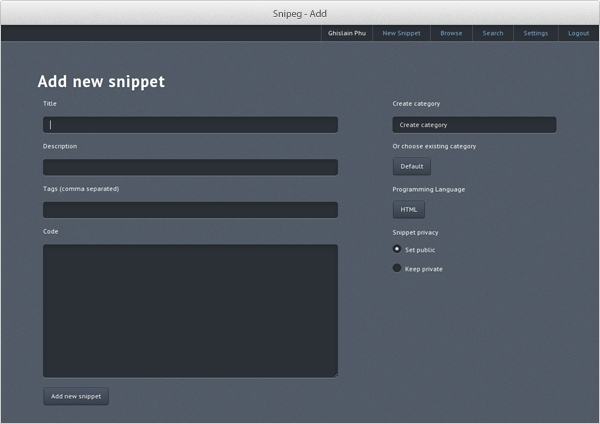
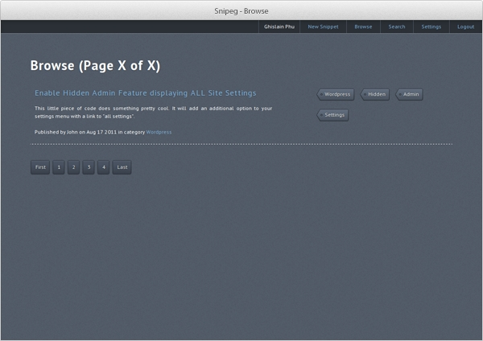

< Snipeg />
Simple PHP5 Code Snippet Manager
 
What is Snipeg ?
Snipeg is an open-source web-based application that helps you to manage your code snippets. It is written in PHP5 and use an integrated SQLite database.
What is a snippet ?
Snippet is a programming term for a small region of re-usable source code. Snippets are often used to clarify the meaning of an otherwise "cluttered" function, or to minimize the use of repeated code that is common to other functions. Wikipedia
Why using Snipeg ?
There are many desktop applications for code snippet management, but very few to my knowledge designed to be installed "in the clouds". If you're coding at the same place everyday, with the same computer, a web-based code snippet manager like Snipeg is perhaps not the most appropriate application for you.
For other developers, Snipeg can be a good way to reach its code snippets from anywhere.
Snipeg has the advantage on website like Snipplr.com to be a free software that you can install on your own server. It allows you to maintain control of your personnal data.
Download
WARNING : Current version is an unstable pre-alpha !
0.1 pre-alpha (tar.gz) | 0.1 pre-alpha (zip)
Licence
Snipeg is a free software distributed under the terms of the MIT license. The entire source code can be downloaded from our GitHub repository.
Make a donation
If Snipeg has proven useful to you, a donation would be greatly appreciated. Thanks for using Snipeg !